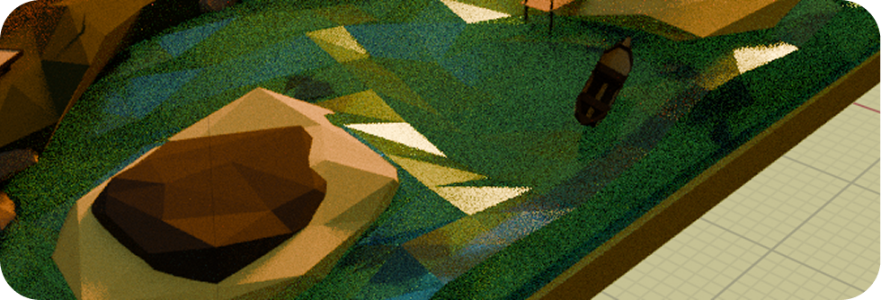
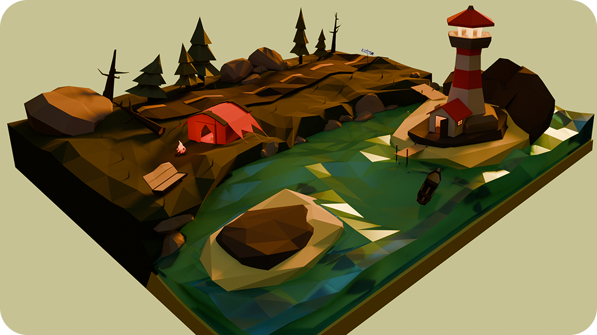

У берега моря
низкополигональный отдых
Подбор референсов
Я изучил работы опытных 3D-художников в этом стиле, обращая внимание на характерные особенности low-poly
моделирования: упрощенную геометрию, стилизованные текстуры и эффективное использование цвета.
Важным этапом при подборе референсов стало изучение работ не только игровых дизайнеров,
но и традиционных художников-пейзажистов. Их подход к композиции и передаче атмосферы
помог найти баланс между технической простотой low-poly стиля и художественной выразительностью.
Особый интерес представляли решения для создания деревьев, кустарников и рельефа местности. Референсы помогли определить цветовую палитру.
В low-poly стиле важно также продумать композицию сцены, чтобы даже с минимальным количеством полигонов создать ощущение глубины и масштаба.
Разработка
Затем приступил к созданию растительности. Деревья моделировались с использованием простых геометрических форм. Для визуального разнообразия варьировал размеры, пропорции.
Текстурирование выполнил в минималистичном стиле — для каждого типа объектов создал материалы с однотонными цветами без детальных текстур, что характерно для low-poly эстетики. Использовал метод запекания нормалей для некоторых сложных объектов, чтобы создать иллюзию детализации без увеличения полигонов.
Каждый элемент моделировался в едином low-poly стиле, но с тщательной проработкой характерных деталей. Особое внимание уделил композиции сцены и расстановке этих элементов для создания увлекательного визуального повествования и ощущения обжитого пространства.
Настройка освещения потребовала экспериментов с направлением и интенсивностью источников света, особенно для передачи теплого свечения костра в вечернее время. Мой выбор пал на закат, так как Солнце в таком положении приятно играло на поверхности воды.

Итог
В результате получилась атмосферная low-poly лесная локация с множеством интересных деталей, демонстрирующая основные принципы стилизованного 3D-моделирования.
